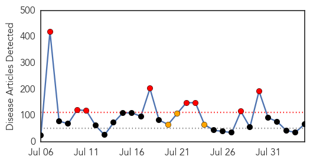
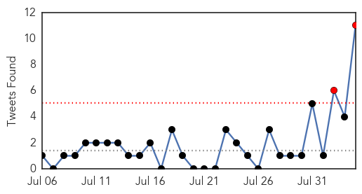
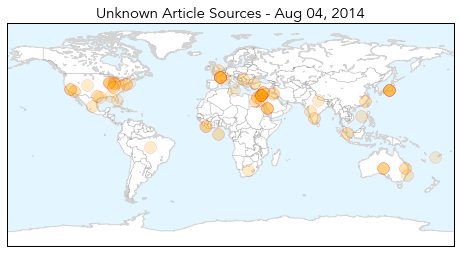
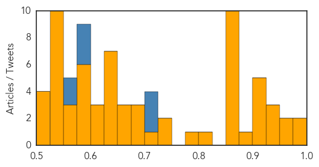

Unknown
30-Day Web Trend
8 alerts, 3 warnings

30-Day Twitter Trend
3 alerts, 0 warnings

Article Locations

Article Confidences
Top Articles:
- 0.983
- Ramadan pilgrimage season in Saudi Arabia mostly free from MERS
- 0.982
- Health officials play down meningococcal outbreak claims after two Australian deaths in 24 hours
- 0.967
- More Chik-V cases confirmed statewide
- 0.962
- 10 new cases of Mers coronavirus in Saudi Arabia
- 0.949
- Seven Persons Test Positive for Japanese Encephalitis in Meghalaya
- 0.933
- What is Chagas disease (spread by 'kissing bugs')?
- 0.926
- Meningococcal death on Darling Downs
- 0.917
- Chicago Tribune
- 0.917
- Chicago Tribune
- 0.917
- Chicago Tribune
- 0.917
- Chicago Tribune
- 0.912
- Meningococcal claims first NE victim this year
- 0.895
- Doctors fear growing CRE superbug in hospitals
- 0.866
- SINGAPORE PRESS-Onus on suspected culprits to prove innocence in transboundary haze
- 0.866
- Hamas agrees to Egyptian proposal for 72-hour truce-spokesman
- 0.866
- NYC hospital tests man after travel to Ebola zone in Africa
- 0.866
- Gerber stands outside his neighbor's home that was damaged by a mudflow triggered by flash floods in the San Bernardino mountain community of Forest Falls
- 0.866
- Bertha becomes 2nd hurricane of 2014 Atlantic season
- 0.866
- Lebanese Sunni clerics urge protests over bombardment of Arsal
- 0.866
- PKK militants call for Kurds to rise up against Islamic State
- 0.866
- Lebanese army says 22 soldiers missing, 14 killed
- 0.866
- Lagos records second Ebola case in doctor who treated victim
- 0.866
- China factory blast due to 'dereliction of duty' -safety official
- 0.823
- Bengal encephalitis outbreak: Medical college principal suspended
- 0.793
- Bengal encephalitis outbreak: Medical college principal suspended
- 0.744
- “This Is Not Over Yet,” Says Toledo Mayor Regarding Water Advisory « CBS Detroit
- 0.727
- Ebola latest: Fears of Ebola spreading grow as American doctor catches killer virus
- 0.717
- Texas investigates intestinal illness outbreak
- 0.699
- At least 100 British tourists fall ill at Egyptian resort after sickness bug sweeps through
- 0.689
- Pune landslide: Maharashtra on guard to check for water contamination - India
- 0.678
- UN Warns Of 'Rapidly Unfolding' Health Disaster In Gaza
- 0.673
- Hendra kills - horses must be vaccinated
- 0.660
- How can Africa settle its health bill?
- 0.657
- UN Warns of 'Rapidly Unfolding' Health Disaster in Gaza
- 0.639
- India takes help from US body to tackle encephalitis outbreak
- 0.635
- UN warns of 'rapidly unfolding' health disaster in Gaza
- 0.635
- UN warns of 'rapidly unfolding' health disaster in Gaza
- 0.635
- UN warns of 'rapidly unfolding' health disaster in Gaza
- 0.635
- UN warns of 'rapidly unfolding' health disaster in Gaza
- 0.635
- UN warns of 'rapidly unfolding' health disaster in Gaza
- 0.635
- UN warns of 'rapidly unfolding' health disaster in Gaza
- 0.614
- Dead rabbits lead Jeffco health to test for tularemia
- 0.609
- Second meningococcal death recorded
- 0.607
- WHO statement on the second meeting of the International Health Regulations Emergency Committee concerning the international spread of wild poliovirus - World
- 0.583
- Texas woman fights flesh-eating bacteria
- 0.579
- World Bank pledges $260 million to fight Ebola as crisis worsens
- 0.579
- Israel, Hamas agree to Egypt-brokered truce
- 0.579
- World leaders, royals come together for WWI commemoration
- 0.579
- Stranded in Tunisia, the forgotten refugees of Libya’s 2011 conflict
- 0.579
- ISIS insurgents seize more towns in northern Iraq
Showing top 50 articles...
Top Tweets:
- 0.725
- Gracias al trabajo de y PQM el aparato Pharmachk que detecta medicamentos deficientes se destacó en Devx2014
- 0.708
- RT: Cada día en el laboratorio veo algo nuevo 😊 Hoy ha tocado el parásito de la Malaria en sangre 🐛 mencantamitrabajo millones…
- 0.702
- RT: La malaria se transmite de persona a persona a travs de la picadura de un mosquito Anofeles infectado. viajesventra…
- 0.594
- RT: Entre 12 y 15Mill de personas mueren al año por malaria de esos entre 650k-750k solo en África. Pero claro el ébola ve…
- 0.589
- RT: Este año en comparación con el año anterior hubo una considerable reducción porcentual de 61.50% de casos de malaria. h…
- 0.581
- RT: Un médico de usa enfermo de ébola es noticia mundial sin embargo mueren a diario miles en el mundo por malaria y hasta…
- 0.553
- RT: que bien que andamos Susanita si vos están en situación de malaria el resto estamos joya
- 0.553
- RT: @Mercutio_M El ecologismo tonto mata de millones en millones. Esa misma malaria.